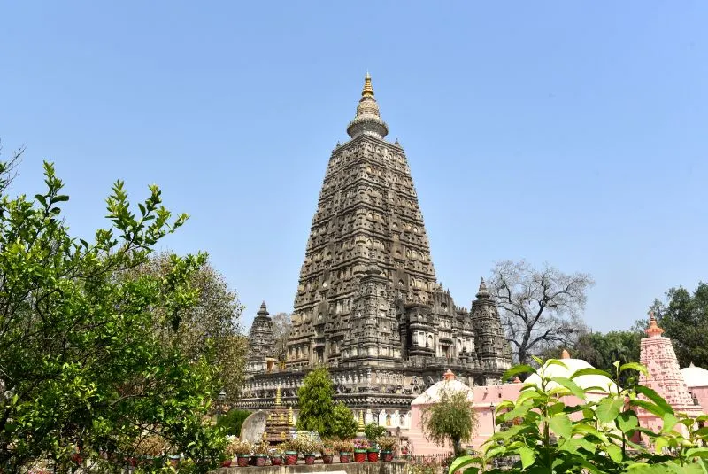

Places to visit
Bihar has various visitor attractions including within the city.
Bihar

Bodh Gaya
Bodh GayaThe village of Bodh Gaya is located in north-eastern India. The historic brick Mahabodhi Temple Complex was constructed to commemorate the location where the Buddha received enlightenment beneath a revered Bodhi Tree. The complex still contains six other holy locations, including a lotus pond, as well as a direct descendant of the tree.

Patna
PatnaOne of the most famous places in Bihar, Patna is a historic city that stretches along the Ganges River's southern bank. The Bihar Museum is located in the state capital and is a notable modern building that displays bronze sculptures and antiquated coins from the area. A colonial granary with a dome that overlooks the city, the Golghar is close to the river.
Nalanda
NalandaNalanda, formerly the most well-known Mahavihara of antiquity, is still a rich source of learning today. It is also a prominent Buddhist centre of learning and a minor pilgrimage spot, all encased in a wisp of spirituality. It provides lively content in the areas of spirituality, tourism, history, culture, and architecture.
Vaishali
VaishaliVaishali, a small region in the heart of Bihar, is a respected centre for Buddhist, Hindu, and Jain worship. Lord Buddha spent a substantial amount of his life here and occasionally travelled to Vaishali. Vaishali, which is also the birthplace of Lord Mahavira, is honoured as a holy site by Jains in addition to Buddhists.
Madhubani
MadhubaniMadhubani, a historic city in Bihar, is renowned for its rich artistic and cultural heritage. The city, which is mentioned in the Ramayana, is well-known for producing the renowned Madhubani paintings, which have their roots here.
Muzaffarpur
Muzaffarpur, the Litchi Kingdom, is situated 75 kilometres north of Patna in Bihar's northern region and is one of the best places to visit in Bihar. It is situated on the banks of the BurhiGandak River, the Bagmati River, and the Lakhandayee River. Muzaffarpur is Bihar's fourth-most populous city. Hinduism, Islam, and Nepalese culture are the main cultural influences in the area.
Bhagalpur
BhagalpurBhagalpur is a city with a rich historical background on the southern banks of the Ganges River. In addition to being a commercial and political hub, Bhagalpur is well known for being a significant educational hub. With the aid of the Vikramshila Gangetic Dolphin Sanctuary, the city supports the Gangetic Dolphin species, India's national aquatic animal.
Pawapuri
PawapuriFor Jains, Pawapuri is a sacred location. It is located in the eastern Indian state of Bihar's Nalanda district. Pawapuri used to be the twin capital of Mall Mahajanapadas in the distant past. Mahavira resided in the king's Rajikshala while in Pawapuri. Due to the fact that Lord Mahavira has interred here about 500 BC, it is revered as a holy site.
Munger
MungerMunger, the capital of Mir Kasim and the Midland of the Aryans, has a fascinating past that is well worth learning about. It is now the location of the Bihar School of Yoga, making it the ideal travel destination for yoga enthusiasts. One may expect a sizable international audience to swarm this charming location.
Vulture Peak
Vulture PeakDue to its elevation and shape, Vulture Peak—also known as Griddhakuta Peak—got its name. This location, which is in Rajgir, is the site of many speeches by Lord Buddha, notably the Lotus Sutra, which converted the Mauryan King Bimbisara to Buddhism. This location, also known as the Holy Eagle Peak, is regarded as one of Lord Buddha's favourite retreats.